A.1 · The photographs
Photos from my phone. I use overlapping views of a library, a street, and an indoor wall. Images are resized to a longest side of 1200 pixels before selecting points or finding features.
Library


Street


Wall and lamp

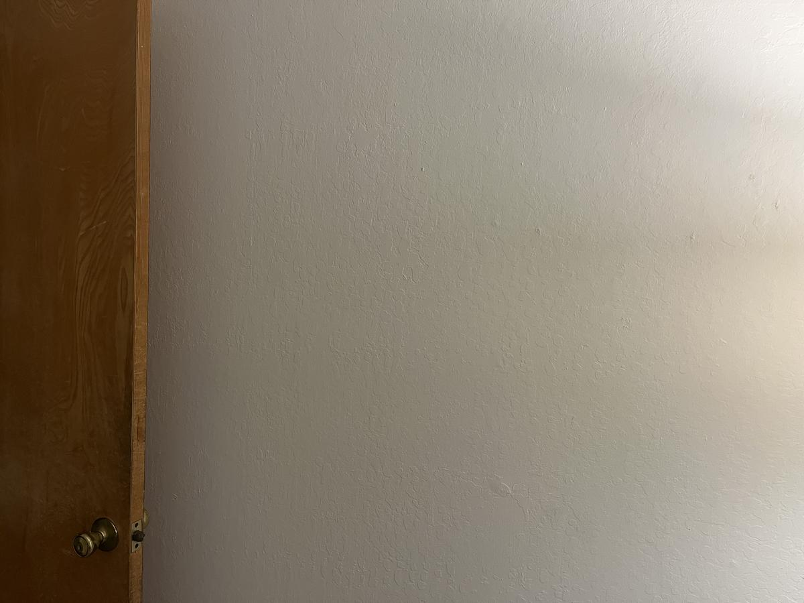

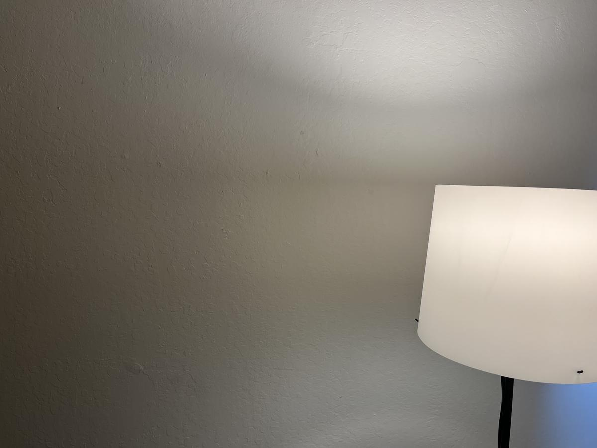
The wall result uses two overlapping views.
A.2 · Recovering homographies
A homography maps one view to another: p′ ∼ Hp. I set the bottom-right entry of H to 1, leaving eight unknowns. Each point pair (x, y) → (u, v) gives two rows:
[ x y 1 0 0 0 -ux -uy ] h = u [ 0 0 0 x y 1 -vx -vy ] h = v h = [h11 h12 h13 h21 h22 h23 h31 h32]ᵀ A h ≈ b
Four pairs are enough in theory. I use more, spread across the overlap, and solve with least squares. The coordinates are centered and scaled first; H is then converted back to pixel coordinates.
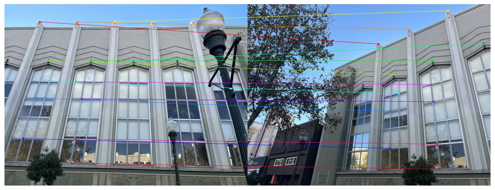
Recovered H from the middle library view to the left view:
[ 0.3772 0.15098 509.72 ] [ -0.41844 0.76362 185.14 ] [ -0.000474 -6.1623e-05 1 ]
Coordinates are (x, y) in the resized images. Point annotation was done visually with assistant help, independently of the automatic matches.
A.2 · More correspondences
Street

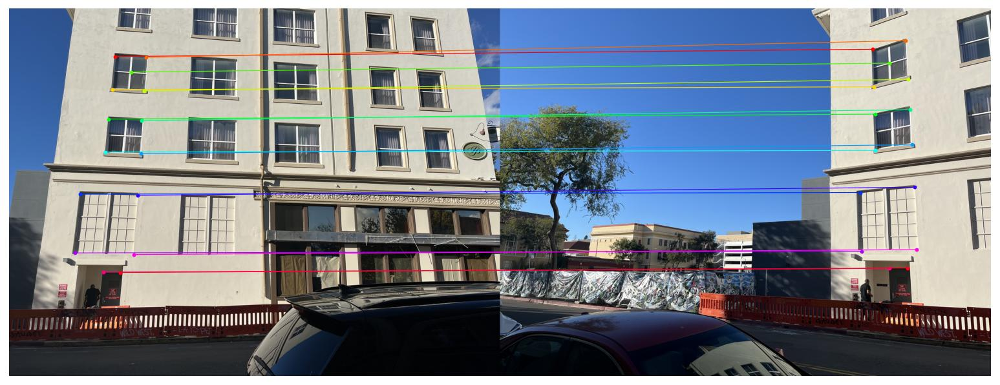
[ 0.43991 0.14927 676.14 ] [ -0.30887 0.91361 63.344 ] [ -0.0004553 3.2213e-05 1 ]
Wall and lamp

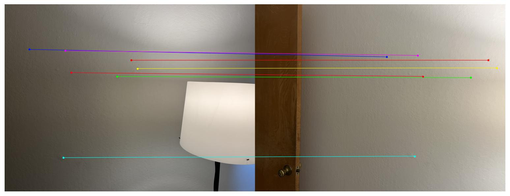
[ 0.51013 -0.0087737 542.44 ] [ -0.17082 0.83502 80.96 ] [ -0.00039657 -3.2544e-07 1 ]
The other adjacent pairs use the same setup. Library: 13 and 15 pairs. Street: 15 and 20. Wall: 7. Small clicking errors matter, especially away from the selected points.
A.3 · Eye patch box
I map each output pixel through H⁻¹ and sample the source image. Inverse warping avoids holes. Nearest neighbor rounds to one pixel; bilinear uses the four neighbors and their distance weights.
I select the four corners of the box face and map them to a rectangle. The corrected pixels come from the angled photo.
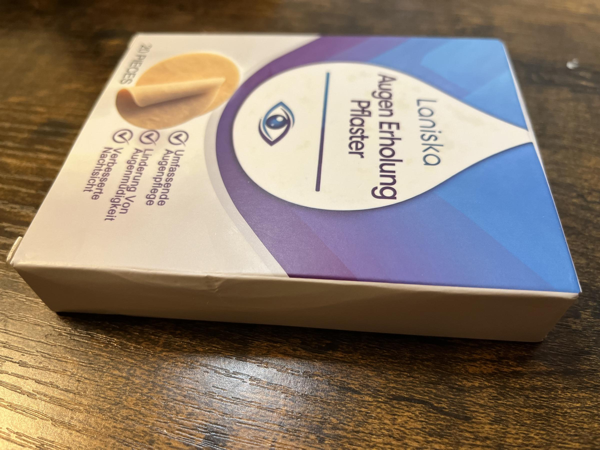

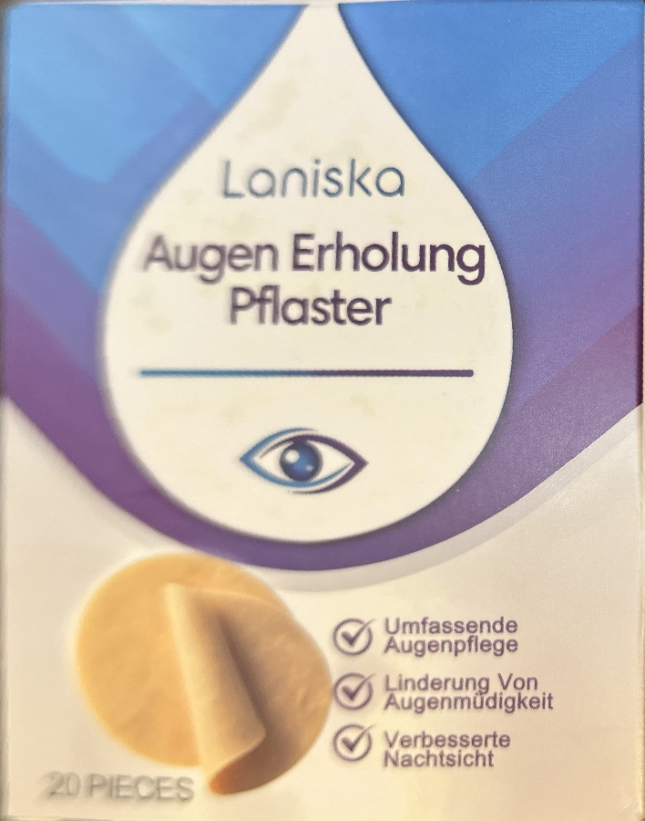

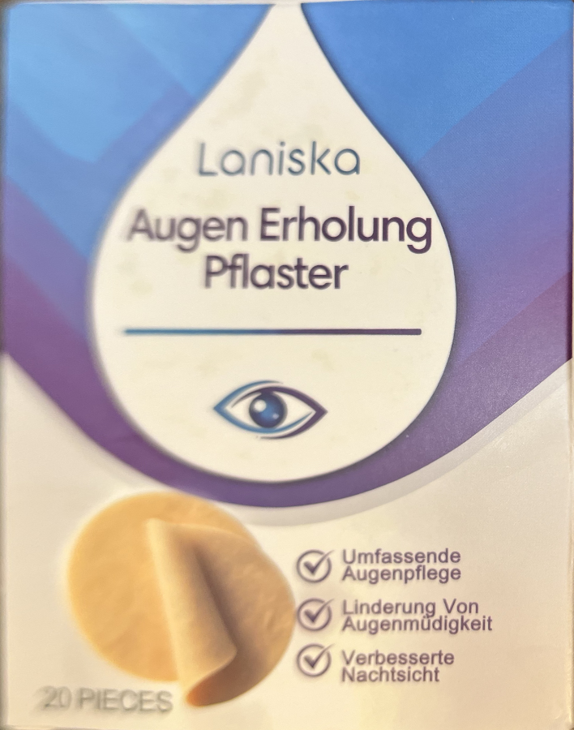
Width / height: target 0.79, rectified 0.79. Nearest: 33.0 ms. Bilinear: 89.3 ms. One run, not a benchmark.
Both recover the rectangular face. Bilinear looks a little smoother around letters. Nearest is faster, but its edges can look rough when enlarged. Neither method can fix blur already in the photo.
A.3 · Caudalie box
I select the four corners of the box face and map them to a rectangle. The corrected pixels come from the angled photo.
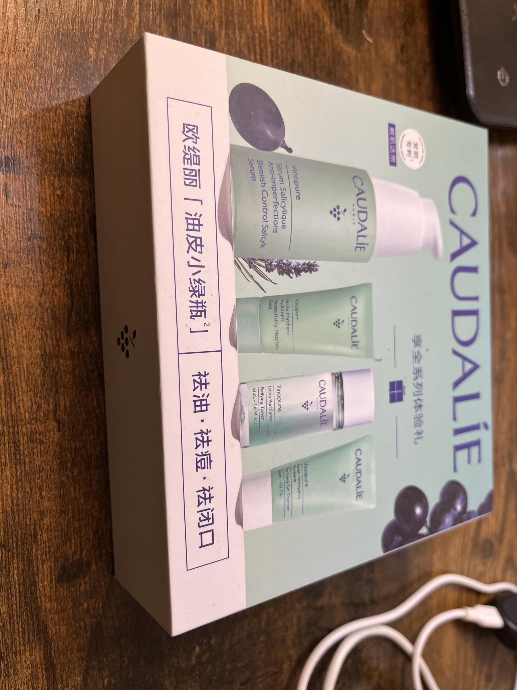


Width / height: target 1.07, rectified 1.07. Nearest: 40.1 ms. Bilinear: 111.4 ms. One run, not a benchmark.
The text is now upright and the sides are straight. The output keeps the target proportions. Source images are read at a longest side of 2400 pixels for these two examples.
A.4 · Warping and blending
The middle image is the reference for each three-image set. For the two-image wall set, it is the second image. I chain adjacent homographies, transform the image corners, and use their combined bounds as the canvas.
Each image gets a weight based on distance to its nearest edge. The weight is largest inside, small near the border. After warping the image and its weights, I take the weighted average in overlaps.
A separate validity mask keeps real black pixels. The black border around each panorama means no source image covers that part of the canvas.
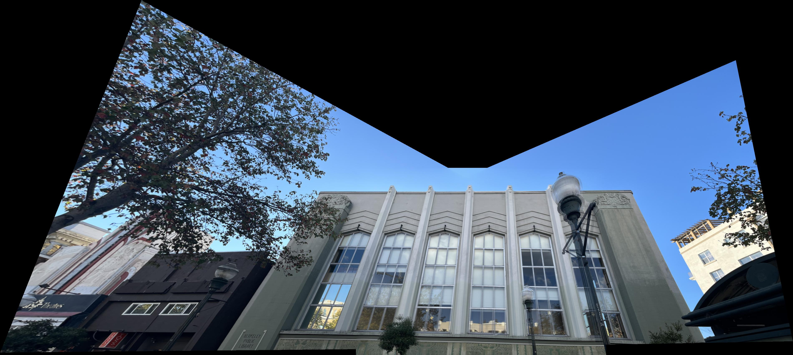
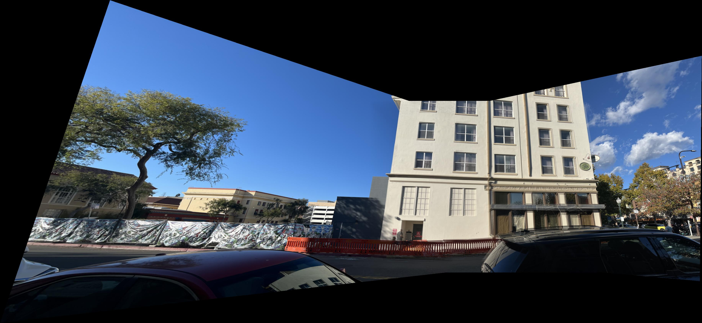
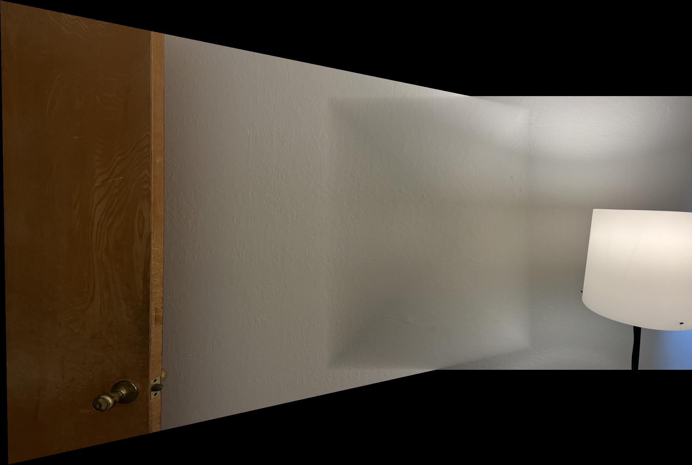
B.1 · Harris corners and ANMS
I use the supplied Harris detector on grayscale images. Points within 20 pixels of the border are removed, so a 40 × 40 descriptor patch can fit.
Plain Harris points bunch up around detailed areas. ANMS spreads them out. For each point, I find its distance to the nearest corner with a response greater than its own response divided by 0.9. I keep up to 1200 points with the largest distances.
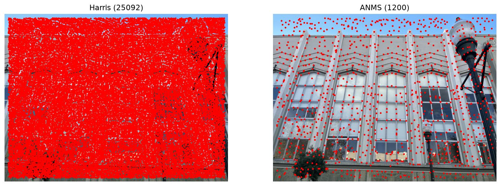
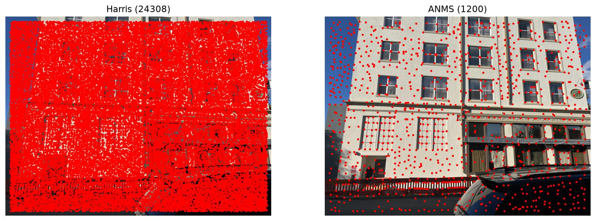
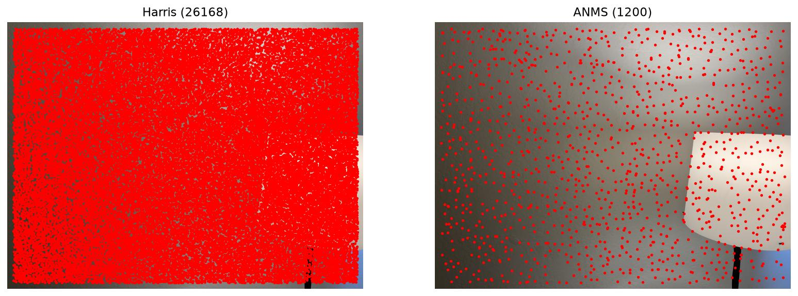
B.2 · Feature descriptors
At each selected corner, I take a 40 × 40 patch from a Gaussian-smoothed grayscale image (σ = 1). Averaging each 5 × 5 block gives an 8 × 8 descriptor. Then subtract its mean and divide by its standard deviation.
This reduces sensitivity to simple brightness and contrast changes. The patches stay axis-aligned. No rotation invariance or multiscale extension.

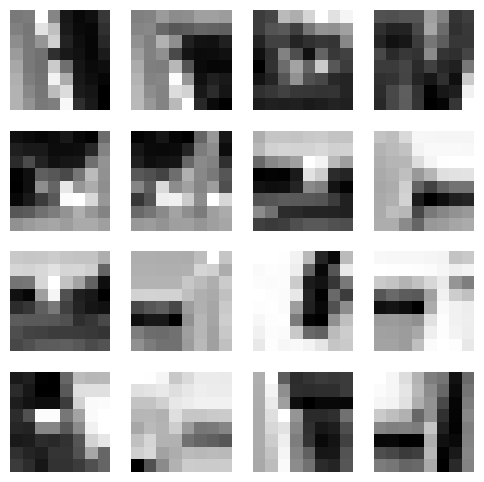

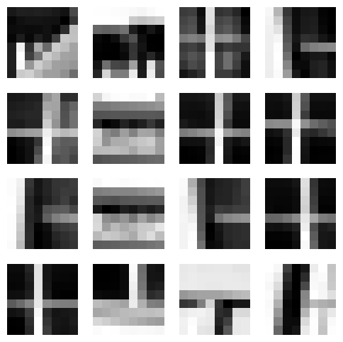

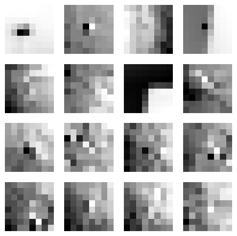
A tiny patch around the corner would be too similar to many others. Sampling a larger neighborhood keeps more context.
B.3 · Matching features
I compare descriptors by Euclidean distance. A match passes if the nearest distance divided by the second-nearest distance is below 0.8. It must also be a mutual nearest neighbor.
The implementation stores squared distances, so the squared threshold is 0.64. Repeated windows still produce wrong matches. RANSAC handles those next.
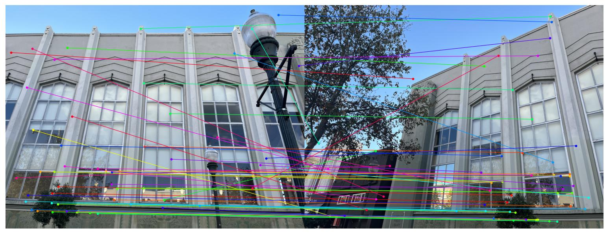
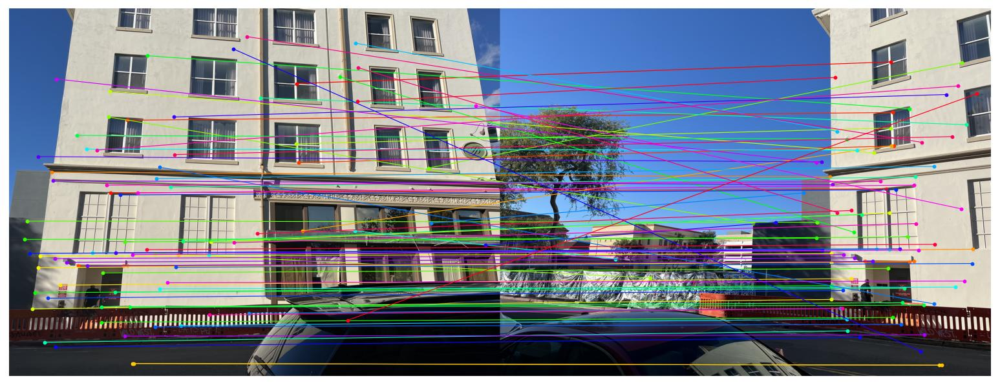
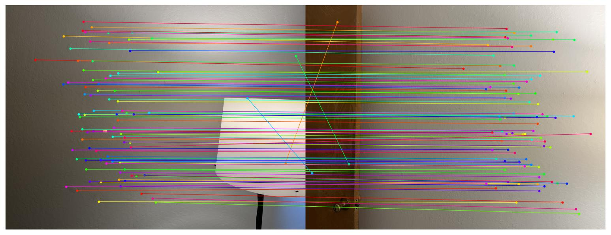
B.4 · Robust homographies
Each RANSAC trial samples four pairs and solves H. A pair is an inlier if its forward reprojection error is below 3 pixels. I try up to 2000 trials, with seed 0, keep the largest consensus, and refit H using its inliers. Degenerate samples are skipped.
I then update the inlier set and refit up to three times. The resulting H goes into the same warp and blend pipeline as Part A.
| Scene / pair | Candidates | Inliers | Median error |
|---|---|---|---|
| Library / 1 | 53 | 16 | 1.19 px |
| Library / 2 | 54 | 10 | 0.84 px |
| Street / 1 | 81 | 39 | 0.86 px |
| Street / 2 | 239 | 146 | 1.04 px |
| Wall and lamp / 1 | 88 | 83 | 0.76 px |
Errors are measured on each model’s own inliers at the 1200-pixel working size. They are not independent accuracy measurements.
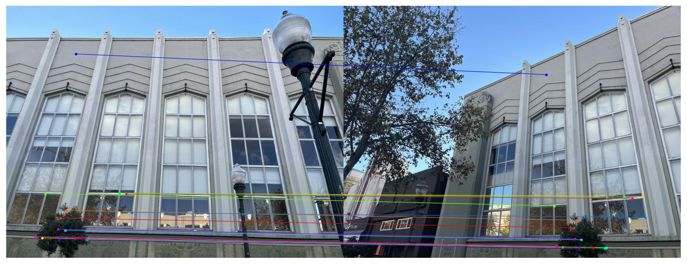
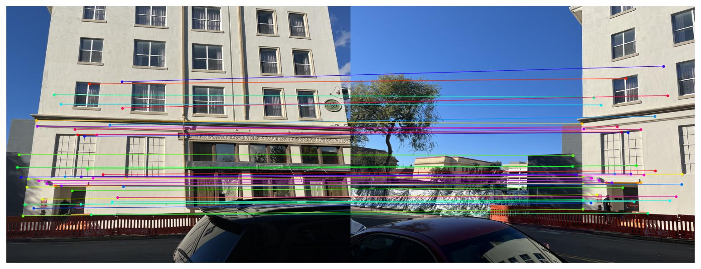
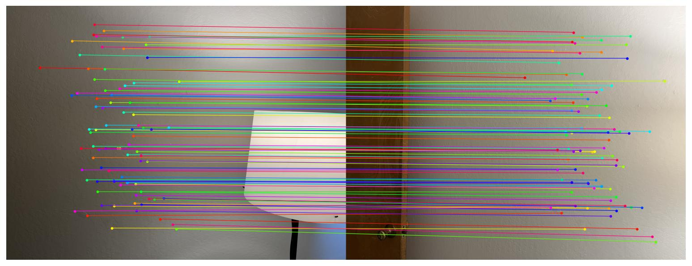
B.4 · Library comparison
Same source images and blending. Only the point correspondences change.


The building lines mostly line up. The lamp in front has a doubled edge in both results. Its depth differs from the facade, so one homography cannot align everything when the camera position changes.
B.4 · Street comparison
Same source images and blending. Only the point correspondences change.


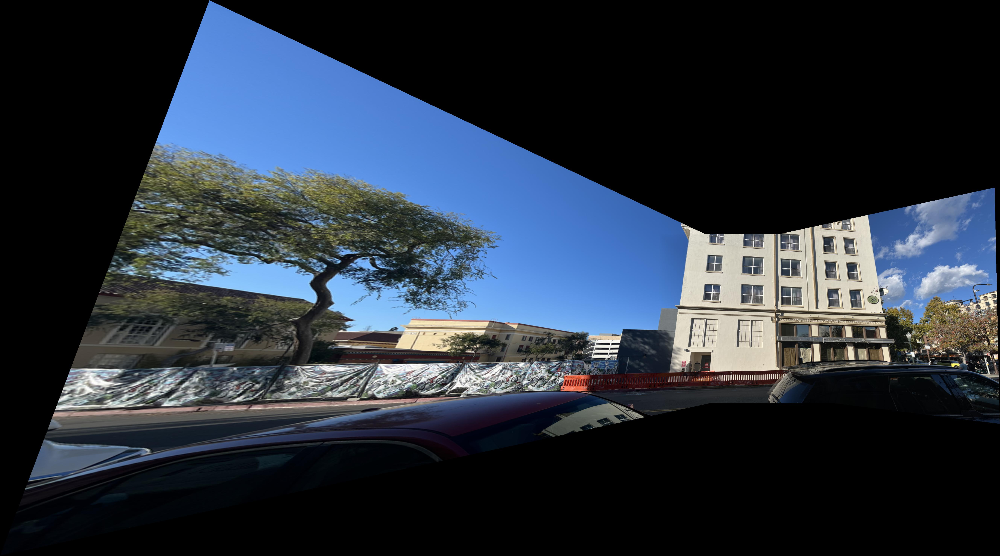
Automatic matching aligns the facade better here. The manual version has more visible offsets around windows and the awning. Cars near the camera still ghost. The wide left side is also stretched by the planar projection.
B.4 · Wall and lamp comparison
Same source images and blending. Only the point correspondences change.


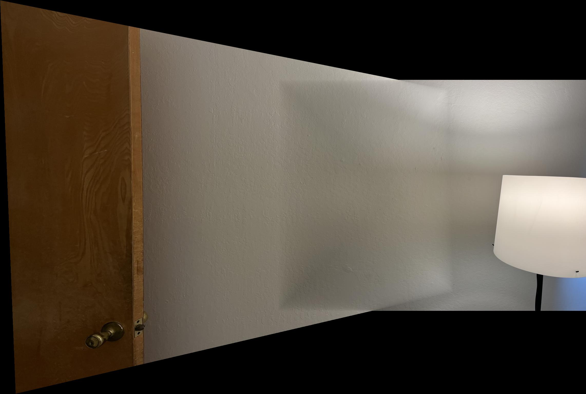
Even this wall has enough small dents and texture to match. The automatic result is close to the selected-point result. There is still a broad brightness transition across the wall.
Limitations
I also stitched all three indoor photos. The wall aligns, but the lamp appears twice. The matches mainly describe the wall, while the lamp is closer to the camera. The final indoor comparison therefore uses only the first two views.
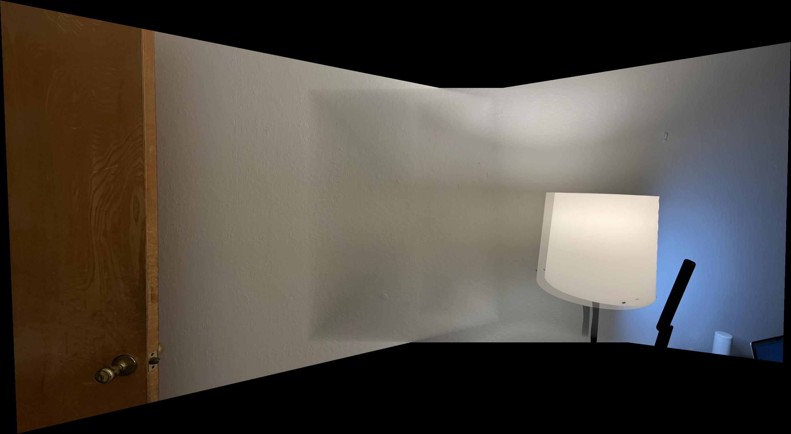
What I learned
Finding many matches is not the whole problem. They need to cover the overlap, and the scene needs to fit the model. Blending hides a seam; it does not fix parallax. The near lamps and cars make that very clear.